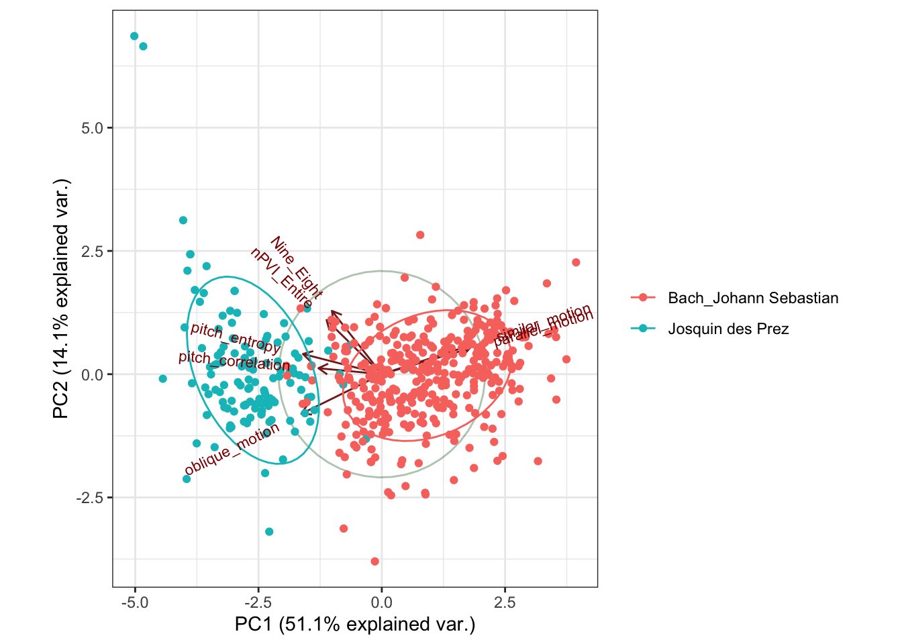
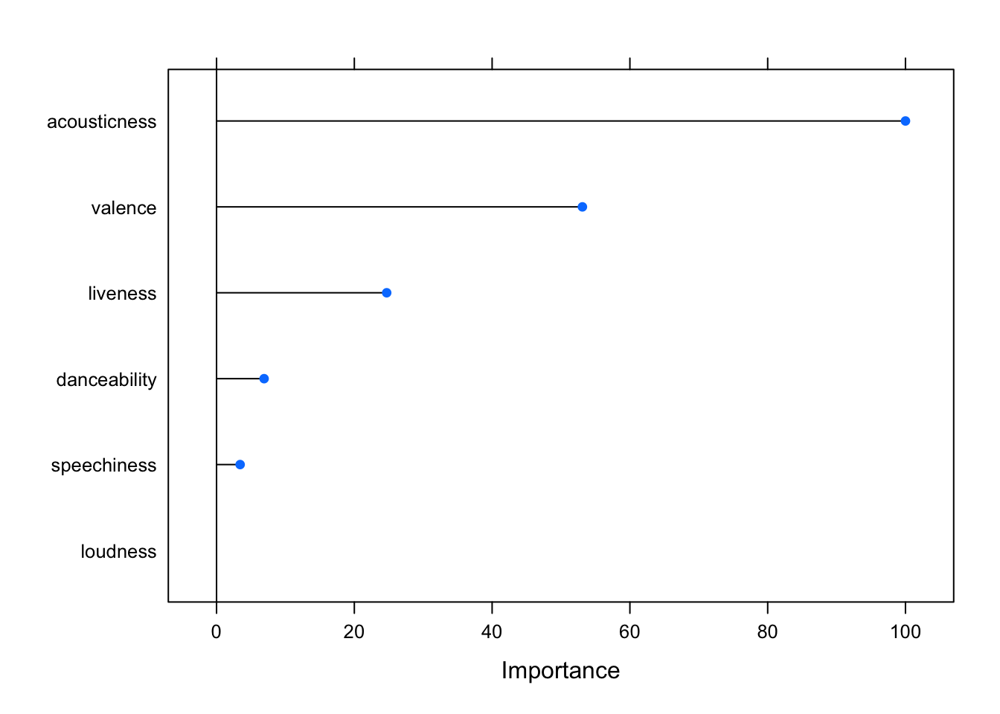

Loading required package: plyr
------------------------------------------------------------------------------
You have loaded plyr after dplyr - this is likely to cause problems.
If you need functions from both plyr and dplyr, please load plyr first, then dplyr:
library(plyr); library(dplyr)
------------------------------------------------------------------------------
Attaching package: 'plyr'
The following objects are masked from 'package:dplyr':
arrange, count, desc, failwith, id, mutate, rename, summarise,
summarize
The following object is masked from 'package:purrr':
compact
Loading required package: scales
Attaching package: 'scales'
The following object is masked from 'package:purrr':
discard
The following object is masked from 'package:readr':
col_factor
Loading required package: grid
library(class)
PCA and Authorship
PCAs are often used for reducing dimensions when we have lots of variables but a model might be better suited from combining those variables. PCAs have also been used a fair bit to explore questions of authorship. Here we have a question of authorship using symbolic data taken from scores. We are trying to explore the music of Josquin.
Jesse Rodin’s Josquin Research Project has given levels of security for attribution, including pieces that we know are Josquin’s, those we think might be, and those which are more questionable.
This code runs the actual principal components analysis.
It also provides a scree plot, allowing us to see which components are the most heavily weighted. This can allow us to reduce the dimensions as we see fit.
It’s worth taking some time to explore what each of these components actually means and how they’re weighted. PCA is weighting instances of parallel motion and similar motion pretty heavily, but negatively weighting pitch entropy and oblique motion. PC2 seems to be looking at nPVI and 9-8 suspensions.
Plotting our two composers with the first two principal components.
g <-ggbiplot(pieces.pca, obs.scale =1, var.scale =1, groups = composer, ellipse =TRUE, circle =TRUE)g <- g +scale_color_discrete(name ='')g <- g +theme(legend.direction ='horizontal', legend.position ='top') +theme_bw()print(g)

# we can change the number of components# seven_component_model <- data.frame(pieces.pca$x[,1:8])
We can also look at how much each of these features is being weighted within the first two components.
A classifier is a model that assigns a label to data based on the input. There are many types of classifiers, and we will be evaluating various models throughout the week.
Our goal will be to train a model on the features generally associated with a category, and then test the accuracy of that model. For now, a good starting point might be our Christmas Song question from last week.
Returning to our Christmas Song Problem
First, let’s get the data and add a column that tells us whether it’s a Christmas song or not
### get the data and add yes/no column.christmas <-get_playlist_audio_features("", "5OP7itTh52BMfZS1DJrdlv")christmas$christmas <-"yes"not <-get_playlist_audio_features("", "6i2Qd6OpeRBAzxfscNXeWp")not$christmas <-"no"## combine the two datasets and get the columns we want to use.christmas_subset <-rbind(christmas, not)christmas_subset <- christmas_subset %>%select(c("christmas", "acousticness", "liveness", "danceability", "loudness", "speechiness", "valence"))
Now we can use the createDataPartition function from the caret library to create a testing and a training dataset. Here, I’ve chosen a 70/30 partition of training and testing, but you can adjust as you see fit.
We can pretty easily implement something like a neural network, using our training dataset to train it:
# weights: 9
initial value 109.013980
iter 10 value 99.822187
iter 20 value 92.753186
iter 30 value 89.757107
iter 40 value 87.983746
iter 50 value 87.505147
iter 60 value 87.225130
iter 70 value 86.931696
iter 80 value 86.821810
iter 90 value 86.787236
iter 100 value 86.721401
final value 86.721401
stopped after 100 iterations
# weights: 25
initial value 116.804506
iter 10 value 98.426532
iter 20 value 78.689701
iter 30 value 68.969735
iter 40 value 52.270500
iter 50 value 41.784200
iter 60 value 41.263983
iter 70 value 41.263097
final value 41.263095
converged
# weights: 41
initial value 124.302082
iter 10 value 94.246262
iter 20 value 76.142688
iter 30 value 71.062331
iter 40 value 65.810110
iter 50 value 63.889012
iter 60 value 63.315223
iter 70 value 63.142900
iter 80 value 63.043260
iter 90 value 62.989277
iter 100 value 62.960232
final value 62.960232
stopped after 100 iterations
# weights: 9
initial value 130.794600
iter 10 value 102.524799
iter 20 value 100.219927
final value 100.219607
converged
# weights: 25
initial value 106.028971
iter 10 value 96.392507
iter 20 value 89.032463
iter 30 value 88.414408
iter 40 value 88.099150
iter 50 value 88.061611
iter 60 value 88.050140
final value 88.049973
converged
# weights: 41
initial value 108.495195
iter 10 value 94.356809
iter 20 value 88.381768
iter 30 value 88.151901
iter 40 value 88.135345
iter 50 value 88.108483
iter 60 value 88.038325
iter 70 value 88.019494
iter 80 value 88.004154
iter 90 value 88.001696
iter 100 value 88.001011
final value 88.001011
stopped after 100 iterations
# weights: 9
initial value 104.705923
iter 10 value 94.455823
iter 20 value 91.648447
iter 30 value 90.098847
iter 40 value 89.479893
iter 50 value 89.062165
iter 60 value 88.734022
iter 70 value 88.586593
iter 80 value 88.508505
iter 90 value 88.498008
iter 100 value 88.480059
final value 88.480059
stopped after 100 iterations
# weights: 25
initial value 106.466357
iter 10 value 91.663647
iter 20 value 73.129050
iter 30 value 60.370042
iter 40 value 56.270839
iter 50 value 55.204016
iter 60 value 55.018822
iter 70 value 54.827348
iter 80 value 54.456546
iter 90 value 54.274992
iter 100 value 53.920170
final value 53.920170
stopped after 100 iterations
# weights: 41
initial value 105.323601
iter 10 value 96.757382
iter 20 value 80.830910
iter 30 value 64.245543
iter 40 value 54.157355
iter 50 value 47.566475
iter 60 value 44.798486
iter 70 value 43.828741
iter 80 value 43.477462
iter 90 value 43.349957
iter 100 value 43.049377
final value 43.049377
stopped after 100 iterations
# weights: 9
initial value 103.594601
iter 10 value 102.335954
iter 20 value 94.790740
final value 93.804604
converged
# weights: 25
initial value 102.920508
iter 10 value 100.370674
iter 20 value 96.371249
iter 30 value 81.528530
iter 40 value 78.944145
iter 50 value 78.938865
iter 50 value 78.938864
iter 50 value 78.938864
final value 78.938864
converged
# weights: 41
initial value 103.566296
iter 10 value 97.463666
iter 20 value 92.762123
iter 30 value 85.359448
iter 40 value 83.112275
final value 83.110983
converged
# weights: 9
initial value 111.757313
iter 10 value 102.628734
iter 20 value 100.776944
iter 30 value 98.915634
final value 98.907923
converged
# weights: 25
initial value 103.047938
iter 10 value 102.504355
iter 20 value 100.037399
iter 30 value 98.818231
iter 40 value 98.685930
iter 50 value 98.679572
iter 60 value 98.672820
final value 98.672445
converged
# weights: 41
initial value 103.892077
iter 10 value 100.591855
iter 20 value 98.721614
iter 30 value 98.633211
iter 40 value 98.631831
iter 50 value 98.631251
iter 60 value 98.630811
iter 70 value 98.625955
iter 80 value 98.624066
final value 98.624055
converged
# weights: 9
initial value 105.075548
iter 10 value 102.161890
iter 20 value 98.248055
iter 30 value 92.457010
iter 40 value 91.561177
iter 50 value 90.738094
iter 60 value 90.454864
iter 70 value 90.110087
iter 80 value 89.846953
iter 90 value 89.815886
iter 100 value 89.796340
final value 89.796340
stopped after 100 iterations
# weights: 25
initial value 102.679027
iter 10 value 99.947429
iter 20 value 88.337602
iter 30 value 85.631860
iter 40 value 85.331310
iter 50 value 85.052107
iter 60 value 84.967670
iter 70 value 84.885741
iter 80 value 84.782308
iter 90 value 84.669732
iter 100 value 84.632841
final value 84.632841
stopped after 100 iterations
# weights: 41
initial value 123.283160
iter 10 value 98.225005
iter 20 value 89.760174
iter 30 value 83.014861
iter 40 value 71.617247
iter 50 value 68.133899
iter 60 value 66.499083
iter 70 value 65.602236
iter 80 value 64.577496
iter 90 value 63.622224
iter 100 value 63.506177
final value 63.506177
stopped after 100 iterations
# weights: 9
initial value 103.752763
iter 10 value 100.830304
iter 20 value 81.798335
iter 30 value 77.396862
iter 40 value 74.151094
iter 50 value 73.754359
iter 60 value 73.621172
iter 70 value 73.340448
iter 80 value 72.949038
iter 90 value 72.767388
iter 100 value 72.490337
final value 72.490337
stopped after 100 iterations
# weights: 25
initial value 104.665826
iter 10 value 100.082123
iter 20 value 82.644577
iter 30 value 81.074171
iter 40 value 80.878698
iter 50 value 80.812496
iter 60 value 80.781925
iter 70 value 80.735657
iter 80 value 80.585675
iter 90 value 80.489808
iter 100 value 80.360239
final value 80.360239
stopped after 100 iterations
# weights: 41
initial value 108.379558
iter 10 value 93.794587
iter 20 value 76.463650
iter 30 value 75.185859
iter 40 value 70.248788
iter 50 value 60.759398
iter 60 value 59.214064
iter 70 value 59.195903
final value 59.195885
converged
# weights: 9
initial value 103.717846
iter 10 value 91.603370
iter 20 value 86.155131
final value 86.150397
converged
# weights: 25
initial value 112.366900
iter 10 value 89.887357
iter 20 value 83.771236
iter 30 value 83.464015
iter 40 value 83.191907
iter 50 value 83.187712
final value 83.187697
converged
# weights: 41
initial value 116.893640
iter 10 value 97.899262
iter 20 value 86.319464
iter 30 value 83.678138
iter 40 value 83.439057
iter 50 value 83.397978
iter 60 value 83.208313
iter 70 value 83.126615
iter 80 value 83.116770
final value 83.116569
converged
# weights: 9
initial value 106.887489
iter 10 value 97.565929
iter 20 value 79.254260
iter 30 value 75.969731
iter 40 value 74.863519
iter 50 value 74.304143
iter 60 value 73.976551
iter 70 value 73.875094
iter 80 value 73.811131
iter 90 value 73.717397
iter 100 value 73.688047
final value 73.688047
stopped after 100 iterations
# weights: 25
initial value 114.401670
iter 10 value 86.631393
iter 20 value 76.255200
iter 30 value 74.730509
iter 40 value 71.972483
iter 50 value 71.285973
iter 60 value 71.167137
iter 70 value 71.132536
iter 80 value 71.068725
iter 90 value 71.033029
iter 100 value 70.765802
final value 70.765802
stopped after 100 iterations
# weights: 41
initial value 107.982016
iter 10 value 96.533685
iter 20 value 75.835126
iter 30 value 75.150173
iter 40 value 74.717942
iter 50 value 74.074523
iter 60 value 73.989534
iter 70 value 73.953575
iter 80 value 73.888720
iter 90 value 73.521200
iter 100 value 72.092285
final value 72.092285
stopped after 100 iterations
# weights: 9
initial value 105.052004
iter 10 value 101.592838
iter 20 value 88.998387
iter 30 value 88.240560
iter 40 value 88.081480
iter 50 value 87.940713
iter 60 value 87.906657
iter 70 value 87.138710
iter 80 value 86.861182
iter 90 value 83.504583
iter 100 value 82.708773
final value 82.708773
stopped after 100 iterations
# weights: 25
initial value 116.623322
iter 10 value 86.366274
iter 20 value 80.590448
iter 30 value 75.635315
iter 40 value 71.784642
iter 50 value 67.729586
iter 60 value 67.468587
iter 70 value 67.381280
iter 80 value 67.338770
iter 90 value 67.337911
iter 100 value 67.323797
final value 67.323797
stopped after 100 iterations
# weights: 41
initial value 103.276928
iter 10 value 94.118926
iter 20 value 90.406459
iter 30 value 88.509407
iter 40 value 87.855484
iter 50 value 87.708877
iter 60 value 87.673590
iter 70 value 87.611448
iter 80 value 87.605925
iter 90 value 87.577945
final value 87.577725
converged
# weights: 9
initial value 116.689830
iter 10 value 100.567732
iter 20 value 92.609541
iter 30 value 92.548576
final value 92.548571
converged
# weights: 25
initial value 103.602407
iter 10 value 100.953375
iter 20 value 92.004457
iter 30 value 90.219688
iter 40 value 89.900308
iter 50 value 89.895509
final value 89.895376
converged
# weights: 41
initial value 112.835606
iter 10 value 97.536868
iter 20 value 90.833726
iter 30 value 89.927426
iter 40 value 89.690691
iter 50 value 89.528614
iter 60 value 89.101177
iter 70 value 89.059680
iter 80 value 89.056365
final value 89.056283
converged
# weights: 9
initial value 103.881765
iter 10 value 101.510470
iter 20 value 96.855779
iter 30 value 96.852552
iter 40 value 96.833202
iter 50 value 96.827901
iter 60 value 96.821242
final value 96.820040
converged
# weights: 25
initial value 103.577588
iter 10 value 95.593733
iter 20 value 77.318431
iter 30 value 74.478249
iter 40 value 73.041631
iter 50 value 72.788449
iter 60 value 72.707704
iter 70 value 72.320461
iter 80 value 71.985988
iter 90 value 71.595372
iter 100 value 71.413155
final value 71.413155
stopped after 100 iterations
# weights: 41
initial value 103.398167
iter 10 value 95.594721
iter 20 value 83.741977
iter 30 value 79.030808
iter 40 value 73.328041
iter 50 value 71.423314
iter 60 value 69.313689
iter 70 value 69.067856
iter 80 value 68.887348
iter 90 value 68.747859
iter 100 value 68.664376
final value 68.664376
stopped after 100 iterations
# weights: 9
initial value 105.614599
iter 10 value 92.376240
iter 20 value 89.534060
iter 30 value 89.028966
iter 40 value 86.163496
iter 50 value 85.639521
iter 60 value 85.448167
iter 70 value 85.437844
iter 80 value 85.426655
iter 90 value 85.424036
iter 100 value 85.403438
final value 85.403438
stopped after 100 iterations
# weights: 25
initial value 105.797100
iter 10 value 100.780459
iter 20 value 86.376043
iter 30 value 79.696231
iter 40 value 75.534673
iter 50 value 75.052181
iter 60 value 74.852231
iter 70 value 74.486727
iter 80 value 72.552381
iter 90 value 71.457579
iter 100 value 71.010444
final value 71.010444
stopped after 100 iterations
# weights: 41
initial value 112.005184
iter 10 value 91.126796
iter 20 value 86.197615
iter 30 value 82.125889
iter 40 value 79.851189
iter 50 value 79.840121
final value 79.838798
converged
# weights: 9
initial value 122.220074
iter 10 value 102.662210
iter 20 value 92.905437
final value 92.867511
converged
# weights: 25
initial value 108.869076
iter 10 value 93.872402
iter 20 value 92.406659
iter 30 value 92.399280
final value 92.399262
converged
# weights: 41
initial value 128.978282
iter 10 value 100.441483
iter 20 value 92.198250
iter 30 value 91.605565
iter 40 value 91.575421
iter 50 value 91.574261
iter 60 value 91.567446
iter 70 value 91.566757
final value 91.566668
converged
# weights: 9
initial value 104.443202
iter 10 value 103.186055
iter 20 value 87.714108
iter 30 value 86.399097
iter 40 value 83.298802
iter 50 value 81.979076
iter 60 value 80.728889
iter 70 value 80.650932
iter 80 value 80.543376
iter 90 value 80.447409
iter 100 value 80.401023
final value 80.401023
stopped after 100 iterations
# weights: 25
initial value 104.577753
iter 10 value 90.632851
iter 20 value 86.094967
iter 30 value 82.518450
iter 40 value 81.778823
iter 50 value 80.396461
iter 60 value 78.245430
iter 70 value 77.132196
iter 80 value 76.464236
iter 90 value 76.289489
iter 100 value 76.226295
final value 76.226295
stopped after 100 iterations
# weights: 41
initial value 104.457775
iter 10 value 90.778443
iter 20 value 84.387606
iter 30 value 71.913391
iter 40 value 70.737872
iter 50 value 69.655745
iter 60 value 67.308590
iter 70 value 66.456094
iter 80 value 63.526908
iter 90 value 62.103054
iter 100 value 61.366516
final value 61.366516
stopped after 100 iterations
# weights: 9
initial value 110.329275
iter 10 value 102.343518
iter 20 value 101.880450
iter 30 value 100.336327
iter 40 value 98.806027
iter 50 value 97.965424
iter 60 value 97.434736
iter 70 value 97.171932
iter 80 value 97.164499
iter 90 value 97.150263
iter 100 value 97.147165
final value 97.147165
stopped after 100 iterations
# weights: 25
initial value 113.859070
iter 10 value 99.815735
iter 20 value 88.400534
iter 30 value 78.462551
iter 40 value 67.643821
iter 50 value 64.021538
iter 60 value 60.138317
iter 70 value 58.621970
iter 80 value 57.732972
iter 90 value 57.034988
iter 100 value 56.249701
final value 56.249701
stopped after 100 iterations
# weights: 41
initial value 120.444441
iter 10 value 94.619408
iter 20 value 86.586346
iter 30 value 80.041371
iter 40 value 76.449434
iter 50 value 62.186741
iter 60 value 53.588018
iter 70 value 49.989708
iter 80 value 47.939106
iter 90 value 47.293952
iter 100 value 46.726758
final value 46.726758
stopped after 100 iterations
# weights: 9
initial value 115.455510
iter 10 value 96.579140
iter 20 value 92.947593
final value 92.943462
converged
# weights: 25
initial value 113.873629
iter 10 value 94.998327
iter 20 value 92.825089
iter 30 value 91.465016
iter 40 value 91.391685
iter 50 value 91.275005
iter 60 value 91.047354
iter 70 value 90.993605
final value 90.992640
converged
# weights: 41
initial value 106.661302
iter 10 value 94.628873
iter 20 value 91.564628
iter 30 value 91.151863
iter 40 value 90.886017
iter 50 value 90.826942
iter 60 value 90.817355
iter 70 value 90.810773
final value 90.810753
converged
# weights: 9
initial value 108.359276
iter 10 value 102.261095
iter 20 value 99.709934
iter 30 value 97.171362
iter 40 value 97.084859
iter 50 value 97.062258
iter 60 value 97.056343
iter 70 value 97.046074
iter 80 value 97.044452
iter 90 value 97.042156
iter 100 value 97.041640
final value 97.041640
stopped after 100 iterations
# weights: 25
initial value 113.058526
iter 10 value 102.345909
iter 20 value 102.180318
iter 30 value 101.059424
iter 40 value 98.682287
iter 50 value 98.342419
iter 60 value 98.332209
iter 70 value 98.185851
iter 80 value 96.274726
iter 90 value 95.763823
iter 100 value 95.652430
final value 95.652430
stopped after 100 iterations
# weights: 41
initial value 103.378356
iter 10 value 92.759295
iter 20 value 85.795870
iter 30 value 74.966894
iter 40 value 66.214359
iter 50 value 61.973229
iter 60 value 59.821027
iter 70 value 57.465059
iter 80 value 54.959703
iter 90 value 54.293532
iter 100 value 53.651192
final value 53.651192
stopped after 100 iterations
# weights: 9
initial value 106.354010
iter 10 value 99.220414
iter 20 value 83.070856
iter 30 value 80.722983
iter 40 value 79.731308
iter 50 value 75.574779
iter 60 value 74.690990
iter 70 value 74.621335
iter 80 value 73.742056
iter 90 value 73.576264
iter 100 value 73.494806
final value 73.494806
stopped after 100 iterations
# weights: 25
initial value 104.439677
iter 10 value 89.240564
iter 20 value 81.103816
iter 30 value 78.753065
iter 40 value 75.604549
iter 50 value 71.534875
iter 60 value 65.413707
iter 70 value 61.634458
iter 80 value 58.669926
iter 90 value 57.755268
iter 100 value 57.290206
final value 57.290206
stopped after 100 iterations
# weights: 41
initial value 109.760800
iter 10 value 98.958035
iter 20 value 83.290287
iter 30 value 72.434239
iter 40 value 71.105180
iter 50 value 71.096922
iter 60 value 71.096653
iter 60 value 71.096653
iter 60 value 71.096653
final value 71.096653
converged
# weights: 9
initial value 107.395671
iter 10 value 98.399478
iter 20 value 90.977240
final value 90.976954
converged
# weights: 25
initial value 104.604744
iter 10 value 94.288055
iter 20 value 90.346526
iter 30 value 89.511317
iter 40 value 88.713083
iter 50 value 88.686120
iter 60 value 88.679471
iter 70 value 88.678451
iter 70 value 88.678450
iter 70 value 88.678450
final value 88.678450
converged
# weights: 41
initial value 106.748026
iter 10 value 94.273376
iter 20 value 89.836457
iter 30 value 89.063090
iter 40 value 88.949706
iter 50 value 88.788540
iter 60 value 88.757094
iter 70 value 88.736496
iter 80 value 88.675337
iter 90 value 88.663125
iter 100 value 88.659383
final value 88.659383
stopped after 100 iterations
# weights: 9
initial value 104.561469
iter 10 value 95.587572
iter 20 value 81.922614
iter 30 value 80.067170
iter 40 value 79.882501
iter 50 value 79.185963
iter 60 value 79.022212
iter 70 value 78.975065
iter 80 value 78.949383
iter 90 value 78.915572
iter 100 value 78.896163
final value 78.896163
stopped after 100 iterations
# weights: 25
initial value 104.109636
iter 10 value 90.290680
iter 20 value 81.586519
iter 30 value 75.416563
iter 40 value 67.623498
iter 50 value 66.665474
iter 60 value 65.859850
iter 70 value 65.535453
iter 80 value 65.389474
iter 90 value 65.145846
iter 100 value 64.231931
final value 64.231931
stopped after 100 iterations
# weights: 41
initial value 196.371816
iter 10 value 95.883558
iter 20 value 81.852246
iter 30 value 76.654336
iter 40 value 67.479175
iter 50 value 58.677653
iter 60 value 57.121708
iter 70 value 56.624656
iter 80 value 55.843847
iter 90 value 55.419221
iter 100 value 54.592537
final value 54.592537
stopped after 100 iterations
# weights: 9
initial value 111.585738
iter 10 value 102.887994
iter 20 value 102.749744
iter 30 value 102.064224
final value 102.064217
converged
# weights: 25
initial value 103.119832
iter 10 value 93.617840
iter 20 value 91.130633
iter 30 value 88.672027
iter 40 value 75.978576
iter 50 value 72.941815
iter 60 value 71.464567
iter 70 value 70.814876
iter 80 value 70.339205
iter 90 value 69.611143
iter 100 value 69.402245
final value 69.402245
stopped after 100 iterations
# weights: 41
initial value 115.551771
iter 10 value 100.801841
iter 20 value 87.813872
iter 30 value 77.004659
iter 40 value 72.169854
iter 50 value 68.179956
iter 60 value 67.348337
iter 70 value 65.299809
iter 80 value 65.277575
final value 65.277534
converged
# weights: 9
initial value 103.436061
iter 10 value 95.038920
iter 20 value 94.956339
final value 94.956336
converged
# weights: 25
initial value 111.053491
iter 10 value 100.847142
iter 20 value 94.547817
iter 30 value 94.372986
iter 40 value 94.307062
iter 50 value 93.751235
iter 60 value 92.706062
iter 70 value 92.006859
iter 80 value 91.928631
iter 90 value 91.926301
final value 91.926244
converged
# weights: 41
initial value 104.745842
iter 10 value 101.768834
iter 20 value 93.297854
iter 30 value 92.054234
iter 40 value 91.994862
iter 50 value 91.889673
iter 60 value 91.802779
iter 70 value 91.786211
iter 80 value 91.703788
iter 90 value 91.556517
iter 100 value 91.282861
final value 91.282861
stopped after 100 iterations
# weights: 9
initial value 102.871819
iter 10 value 100.434233
iter 20 value 92.183781
iter 30 value 91.241525
iter 40 value 90.927977
iter 50 value 89.761845
iter 60 value 89.218262
iter 70 value 89.166494
iter 80 value 89.106129
iter 90 value 89.001609
iter 100 value 88.957816
final value 88.957816
stopped after 100 iterations
# weights: 25
initial value 133.828442
iter 10 value 100.992399
iter 20 value 79.241786
iter 30 value 74.105772
iter 40 value 72.369300
iter 50 value 71.613872
iter 60 value 71.297295
iter 70 value 69.714687
iter 80 value 69.046687
iter 90 value 68.894273
iter 100 value 68.596898
final value 68.596898
stopped after 100 iterations
# weights: 41
initial value 103.162591
iter 10 value 91.258893
iter 20 value 77.452148
iter 30 value 75.203754
iter 40 value 74.826587
iter 50 value 74.568674
iter 60 value 74.221888
iter 70 value 73.913715
iter 80 value 73.818359
iter 90 value 72.961724
iter 100 value 71.112663
final value 71.112663
stopped after 100 iterations
# weights: 9
initial value 111.294153
iter 10 value 86.978560
iter 20 value 85.403923
iter 30 value 85.095627
iter 40 value 85.021882
iter 50 value 85.002743
iter 60 value 84.980672
iter 70 value 84.949016
iter 80 value 84.942078
iter 90 value 84.941395
iter 100 value 84.928187
final value 84.928187
stopped after 100 iterations
# weights: 25
initial value 108.479080
iter 10 value 87.772988
iter 20 value 79.728363
iter 30 value 69.773048
iter 40 value 61.956432
iter 50 value 61.858308
iter 60 value 61.857236
final value 61.857227
converged
# weights: 41
initial value 117.173307
iter 10 value 98.384744
iter 20 value 81.859344
iter 30 value 72.356768
iter 40 value 65.036475
iter 50 value 59.705507
iter 60 value 48.422378
iter 70 value 46.514338
iter 80 value 45.631837
iter 90 value 44.914176
iter 100 value 44.865667
final value 44.865667
stopped after 100 iterations
# weights: 9
initial value 110.919337
iter 10 value 103.568451
iter 20 value 100.158326
iter 30 value 90.428631
final value 90.417318
converged
# weights: 25
initial value 104.792544
iter 10 value 91.034469
iter 20 value 88.570942
iter 30 value 88.313829
final value 88.313722
converged
# weights: 41
initial value 127.828617
iter 10 value 96.154587
iter 20 value 90.223907
iter 30 value 88.948294
iter 40 value 88.664364
iter 50 value 88.590443
iter 60 value 88.576479
final value 88.570969
converged
# weights: 9
initial value 115.083579
iter 10 value 103.636790
iter 20 value 103.536160
iter 30 value 101.344039
iter 40 value 99.953238
iter 50 value 99.854527
iter 60 value 99.246075
iter 70 value 99.182592
iter 80 value 99.173452
iter 90 value 99.171863
final value 99.171861
converged
# weights: 25
initial value 104.636297
iter 10 value 87.789671
iter 20 value 82.148091
iter 30 value 73.708709
iter 40 value 70.736290
iter 50 value 69.920101
iter 60 value 69.859624
iter 70 value 69.848173
iter 80 value 69.820429
iter 90 value 69.796990
iter 100 value 69.785025
final value 69.785025
stopped after 100 iterations
# weights: 41
initial value 108.181162
iter 10 value 101.761938
iter 20 value 83.879278
iter 30 value 80.779784
iter 40 value 73.032230
iter 50 value 69.417892
iter 60 value 68.713188
iter 70 value 67.915103
iter 80 value 66.568397
iter 90 value 64.169700
iter 100 value 61.900671
final value 61.900671
stopped after 100 iterations
# weights: 9
initial value 116.527842
iter 10 value 103.963142
iter 20 value 103.143998
iter 30 value 102.607121
final value 102.572609
converged
# weights: 25
initial value 109.303717
iter 10 value 89.904344
iter 20 value 86.860841
iter 30 value 81.516044
iter 40 value 71.152556
iter 50 value 63.830157
iter 60 value 62.725757
iter 70 value 62.585832
iter 80 value 62.556810
iter 90 value 62.495313
iter 100 value 62.203064
final value 62.203064
stopped after 100 iterations
# weights: 41
initial value 134.392680
iter 10 value 100.156097
iter 20 value 86.747708
iter 30 value 76.167844
iter 40 value 70.647767
iter 50 value 66.946098
iter 60 value 62.728448
iter 70 value 53.758219
iter 80 value 48.073620
iter 90 value 43.906001
iter 100 value 43.831804
final value 43.831804
stopped after 100 iterations
# weights: 9
initial value 120.294973
iter 10 value 103.934472
iter 20 value 92.561957
iter 30 value 91.476016
final value 91.475956
converged
# weights: 25
initial value 107.597756
iter 10 value 95.559274
iter 20 value 91.132503
iter 30 value 91.082296
iter 40 value 91.059054
iter 50 value 91.051857
final value 91.047376
converged
# weights: 41
initial value 106.547154
iter 10 value 97.470766
iter 20 value 91.693052
iter 30 value 91.344168
iter 40 value 91.081313
iter 50 value 90.968739
iter 60 value 90.683808
iter 70 value 90.666493
iter 80 value 90.664297
iter 90 value 90.663573
iter 100 value 90.662259
final value 90.662259
stopped after 100 iterations
# weights: 9
initial value 104.130679
iter 10 value 89.959401
iter 20 value 86.731981
iter 30 value 86.710942
iter 40 value 86.602153
iter 50 value 86.136012
iter 60 value 85.928770
iter 70 value 85.604047
iter 80 value 84.696363
iter 90 value 84.091976
iter 100 value 84.038288
final value 84.038288
stopped after 100 iterations
# weights: 25
initial value 110.570115
iter 10 value 97.138957
iter 20 value 86.189782
iter 30 value 79.189952
iter 40 value 71.263509
iter 50 value 66.624275
iter 60 value 64.060231
iter 70 value 62.457609
iter 80 value 61.551871
iter 90 value 60.957694
iter 100 value 60.669482
final value 60.669482
stopped after 100 iterations
# weights: 41
initial value 104.454128
iter 10 value 100.275649
iter 20 value 85.608411
iter 30 value 72.423786
iter 40 value 58.436694
iter 50 value 53.019069
iter 60 value 51.502022
iter 70 value 51.051894
iter 80 value 50.333362
iter 90 value 49.067850
iter 100 value 48.140197
final value 48.140197
stopped after 100 iterations
# weights: 9
initial value 113.017993
iter 10 value 103.450169
iter 20 value 97.113497
iter 30 value 96.938599
iter 40 value 96.923040
iter 50 value 93.070628
iter 60 value 89.340019
iter 70 value 88.571412
iter 80 value 87.827079
iter 90 value 87.148625
iter 100 value 86.252550
final value 86.252550
stopped after 100 iterations
# weights: 25
initial value 103.882623
iter 10 value 98.791791
iter 20 value 79.750824
iter 30 value 70.195890
iter 40 value 67.275517
iter 50 value 60.720195
iter 60 value 59.437540
iter 70 value 59.432040
final value 59.432013
converged
# weights: 41
initial value 119.645732
iter 10 value 97.036061
iter 20 value 85.799609
iter 30 value 84.717027
iter 40 value 74.472587
iter 50 value 71.244210
iter 60 value 66.803782
iter 70 value 63.162569
iter 80 value 58.561183
iter 90 value 54.589387
iter 100 value 51.834868
final value 51.834868
stopped after 100 iterations
# weights: 9
initial value 104.357642
iter 10 value 101.471132
iter 20 value 91.647769
iter 30 value 90.744539
final value 90.744516
converged
# weights: 25
initial value 104.807360
iter 10 value 94.930296
iter 20 value 90.997543
iter 30 value 90.893710
iter 40 value 89.398738
iter 50 value 88.455387
iter 60 value 88.299603
iter 70 value 87.879097
iter 80 value 87.867806
iter 90 value 87.867541
iter 100 value 87.852766
final value 87.852766
stopped after 100 iterations
# weights: 41
initial value 117.089874
iter 10 value 100.742639
iter 20 value 88.249681
iter 30 value 87.847529
iter 40 value 87.843032
iter 50 value 87.842912
iter 60 value 87.832964
iter 70 value 87.705742
iter 80 value 87.643393
iter 90 value 87.623372
iter 100 value 87.610605
final value 87.610605
stopped after 100 iterations
# weights: 9
initial value 106.702756
iter 10 value 102.429858
iter 20 value 88.275261
iter 30 value 79.671760
iter 40 value 78.039637
iter 50 value 74.773495
iter 60 value 74.314102
iter 70 value 74.089882
iter 80 value 73.887543
iter 90 value 73.843184
iter 100 value 73.767819
final value 73.767819
stopped after 100 iterations
# weights: 25
initial value 106.643911
iter 10 value 102.309499
iter 20 value 82.028870
iter 30 value 75.489785
iter 40 value 73.090450
iter 50 value 73.032449
iter 60 value 72.638153
iter 70 value 70.698626
iter 80 value 70.418538
iter 90 value 70.305860
iter 100 value 69.781813
final value 69.781813
stopped after 100 iterations
# weights: 41
initial value 105.169947
iter 10 value 94.224132
iter 20 value 80.002561
iter 30 value 75.726729
iter 40 value 67.287239
iter 50 value 63.482363
iter 60 value 61.342112
iter 70 value 58.424949
iter 80 value 56.576939
iter 90 value 52.209856
iter 100 value 50.157657
final value 50.157657
stopped after 100 iterations
# weights: 9
initial value 107.669777
iter 10 value 98.035189
iter 20 value 90.659319
iter 30 value 85.072644
iter 40 value 77.930935
iter 50 value 75.330301
iter 60 value 74.371610
iter 70 value 74.307225
iter 80 value 74.175431
iter 90 value 73.904069
iter 100 value 73.814388
final value 73.814388
stopped after 100 iterations
# weights: 25
initial value 107.409415
iter 10 value 89.499567
iter 20 value 70.586979
iter 30 value 62.699240
iter 40 value 61.943217
iter 50 value 61.880942
iter 60 value 61.880399
final value 61.880393
converged
# weights: 41
initial value 103.632475
iter 10 value 81.548062
iter 20 value 67.385366
iter 30 value 59.282400
iter 40 value 51.967661
iter 50 value 50.321230
final value 50.312586
converged
# weights: 9
initial value 109.541828
iter 10 value 100.992532
iter 20 value 87.573837
iter 30 value 87.045959
iter 30 value 87.045959
iter 30 value 87.045959
final value 87.045959
converged
# weights: 25
initial value 120.328098
iter 10 value 99.976843
iter 20 value 86.313134
iter 30 value 83.711999
iter 40 value 82.687928
iter 50 value 82.077705
iter 60 value 82.066558
final value 82.065117
converged
# weights: 41
initial value 110.877501
iter 10 value 100.142854
iter 20 value 85.984679
iter 30 value 83.036542
iter 40 value 82.861240
iter 50 value 82.859871
iter 60 value 82.859238
iter 70 value 82.856835
iter 80 value 82.856216
iter 90 value 82.846204
iter 100 value 82.557114
final value 82.557114
stopped after 100 iterations
# weights: 9
initial value 103.730756
iter 10 value 83.716197
iter 20 value 78.176599
iter 30 value 77.577930
iter 40 value 75.181527
iter 50 value 75.120057
iter 60 value 75.110464
iter 70 value 75.105159
iter 80 value 75.102795
iter 90 value 75.101597
iter 100 value 75.100883
final value 75.100883
stopped after 100 iterations
# weights: 25
initial value 105.954161
iter 10 value 93.530861
iter 20 value 80.303409
iter 30 value 71.979876
iter 40 value 64.654228
iter 50 value 63.462771
iter 60 value 63.329721
iter 70 value 63.301159
iter 80 value 63.289221
iter 90 value 63.266487
iter 100 value 63.244264
final value 63.244264
stopped after 100 iterations
# weights: 41
initial value 121.305412
iter 10 value 84.701181
iter 20 value 68.121512
iter 30 value 65.227317
iter 40 value 56.450124
iter 50 value 55.119977
iter 60 value 54.419485
iter 70 value 54.173216
iter 80 value 54.000054
iter 90 value 53.874768
iter 100 value 53.768862
final value 53.768862
stopped after 100 iterations
# weights: 9
initial value 115.950565
iter 10 value 103.314130
iter 20 value 103.155902
iter 30 value 102.108821
final value 102.097833
converged
# weights: 25
initial value 106.338269
iter 10 value 92.363600
iter 20 value 80.534066
iter 30 value 67.144512
iter 40 value 63.775865
iter 50 value 63.575765
final value 63.573818
converged
# weights: 41
initial value 109.554988
iter 10 value 93.971502
iter 20 value 87.962198
iter 30 value 82.563943
iter 40 value 73.158762
iter 50 value 65.991229
iter 60 value 56.051920
iter 70 value 52.793643
iter 80 value 52.009243
iter 90 value 51.737743
iter 100 value 51.492657
final value 51.492657
stopped after 100 iterations
# weights: 9
initial value 118.348242
iter 10 value 103.436674
iter 20 value 95.598256
iter 30 value 93.176183
final value 93.175912
converged
# weights: 25
initial value 112.844142
iter 10 value 100.678909
iter 20 value 92.392686
iter 30 value 91.922223
iter 40 value 91.606565
iter 50 value 91.594303
iter 60 value 91.589520
iter 70 value 91.533340
iter 80 value 90.022636
iter 90 value 90.002844
iter 90 value 90.002843
iter 90 value 90.002843
final value 90.002843
converged
# weights: 41
initial value 108.344564
iter 10 value 94.569510
iter 20 value 92.364142
iter 30 value 91.966556
iter 40 value 91.773890
iter 50 value 90.870360
iter 60 value 90.289901
iter 70 value 90.149420
iter 80 value 89.835994
iter 90 value 89.583235
iter 100 value 89.490529
final value 89.490529
stopped after 100 iterations
# weights: 9
initial value 108.411382
iter 10 value 89.881061
iter 20 value 87.844405
iter 30 value 87.429014
iter 40 value 87.237779
iter 50 value 87.177746
iter 60 value 86.882973
iter 70 value 86.743405
iter 80 value 86.510020
iter 90 value 86.298102
iter 100 value 86.288223
final value 86.288223
stopped after 100 iterations
# weights: 25
initial value 109.701775
iter 10 value 103.060605
iter 20 value 89.771322
iter 30 value 87.693877
iter 40 value 87.396035
iter 50 value 87.349068
iter 60 value 86.313715
iter 70 value 85.766343
iter 80 value 81.422822
iter 90 value 74.723583
iter 100 value 73.425325
final value 73.425325
stopped after 100 iterations
# weights: 41
initial value 122.981170
iter 10 value 93.445483
iter 20 value 80.851201
iter 30 value 70.137636
iter 40 value 68.989917
iter 50 value 68.505158
iter 60 value 68.301484
iter 70 value 68.228934
iter 80 value 68.089367
iter 90 value 67.653243
iter 100 value 67.004894
final value 67.004894
stopped after 100 iterations
# weights: 9
initial value 110.935545
iter 10 value 103.849465
iter 20 value 103.195022
iter 20 value 103.195022
final value 103.195022
converged
# weights: 25
initial value 113.997625
iter 10 value 89.182001
iter 20 value 85.441384
iter 30 value 83.319750
iter 40 value 80.223957
iter 50 value 80.211199
final value 80.211186
converged
# weights: 41
initial value 105.615794
iter 10 value 92.558731
iter 20 value 78.583648
iter 30 value 70.012288
iter 40 value 66.956103
iter 50 value 65.862864
iter 60 value 65.571986
iter 70 value 64.928832
iter 80 value 64.543092
iter 90 value 64.293669
iter 100 value 64.151334
final value 64.151334
stopped after 100 iterations
# weights: 9
initial value 104.273118
iter 10 value 99.863023
iter 20 value 92.053209
final value 92.052805
converged
# weights: 25
initial value 108.033271
iter 10 value 96.861618
iter 20 value 91.597070
iter 30 value 90.473512
iter 40 value 90.285408
iter 50 value 90.260991
iter 60 value 90.221142
iter 70 value 90.167164
iter 80 value 90.164994
final value 90.164923
converged
# weights: 41
initial value 110.484038
iter 10 value 101.360535
iter 20 value 91.871129
iter 30 value 90.420174
iter 40 value 90.267625
iter 50 value 90.229010
iter 60 value 90.224264
iter 70 value 90.219803
iter 80 value 90.214393
iter 90 value 90.206355
iter 100 value 90.194519
final value 90.194519
stopped after 100 iterations
# weights: 9
initial value 110.157282
iter 10 value 103.679534
iter 20 value 92.501832
iter 30 value 86.599346
iter 40 value 85.470079
iter 50 value 84.856987
iter 60 value 83.683625
iter 70 value 83.368930
iter 80 value 83.184159
iter 90 value 83.175277
iter 100 value 83.173941
final value 83.173941
stopped after 100 iterations
# weights: 25
initial value 109.793370
iter 10 value 90.123577
iter 20 value 83.530753
iter 30 value 82.109957
iter 40 value 82.090477
iter 50 value 82.034698
iter 60 value 82.029443
iter 70 value 81.987148
iter 80 value 81.857116
iter 90 value 81.817381
iter 100 value 77.477982
final value 77.477982
stopped after 100 iterations
# weights: 41
initial value 111.031796
iter 10 value 92.512714
iter 20 value 84.616432
iter 30 value 74.999835
iter 40 value 64.781664
iter 50 value 61.598454
iter 60 value 59.418654
iter 70 value 58.809918
iter 80 value 57.876038
iter 90 value 56.820475
iter 100 value 56.522906
final value 56.522906
stopped after 100 iterations
# weights: 9
initial value 102.178809
iter 10 value 89.470102
iter 20 value 88.666007
iter 30 value 87.996700
iter 40 value 87.860388
iter 50 value 87.765989
iter 60 value 87.743759
iter 70 value 87.724572
iter 80 value 87.713687
iter 90 value 87.708683
iter 100 value 87.699586
final value 87.699586
stopped after 100 iterations
# weights: 25
initial value 102.656880
iter 10 value 92.988620
iter 20 value 81.569242
iter 30 value 71.230646
iter 40 value 67.783222
iter 50 value 66.809279
iter 60 value 66.610966
iter 70 value 66.375314
iter 80 value 65.843442
iter 90 value 65.474006
iter 100 value 65.399809
final value 65.399809
stopped after 100 iterations
# weights: 41
initial value 125.026725
iter 10 value 98.907334
iter 20 value 86.032995
iter 30 value 74.111858
iter 40 value 63.705256
iter 50 value 59.048704
iter 60 value 58.495258
iter 70 value 58.452187
iter 80 value 58.449514
iter 80 value 58.449513
iter 80 value 58.449513
final value 58.449513
converged
# weights: 9
initial value 118.430029
iter 10 value 101.598983
iter 20 value 99.644954
iter 30 value 92.137328
iter 40 value 91.761574
final value 91.761571
converged
# weights: 25
initial value 117.257375
iter 10 value 101.192637
iter 20 value 90.960869
iter 30 value 90.294391
iter 40 value 89.901921
iter 50 value 89.400869
iter 60 value 89.352244
iter 70 value 89.351348
final value 89.351346
converged
# weights: 41
initial value 110.427806
iter 10 value 98.575933
iter 20 value 89.968442
iter 30 value 89.576401
iter 40 value 89.510379
iter 50 value 89.372658
iter 60 value 89.304976
iter 70 value 89.301421
iter 80 value 89.266709
iter 90 value 89.261545
final value 89.261230
converged
# weights: 9
initial value 102.124936
iter 10 value 90.222971
iter 20 value 88.369268
iter 30 value 87.920039
iter 40 value 87.752667
iter 50 value 87.746021
iter 60 value 87.736035
iter 70 value 87.734732
iter 80 value 87.734576
iter 90 value 87.734525
final value 87.734187
converged
# weights: 25
initial value 102.248036
iter 10 value 97.917290
iter 20 value 82.900462
iter 30 value 70.430190
iter 40 value 68.296006
iter 50 value 67.198207
iter 60 value 66.980581
iter 70 value 66.132680
iter 80 value 65.791029
iter 90 value 65.747461
iter 100 value 65.723707
final value 65.723707
stopped after 100 iterations
# weights: 41
initial value 103.842072
iter 10 value 89.104515
iter 20 value 85.766891
iter 30 value 73.497712
iter 40 value 64.374918
iter 50 value 60.285499
iter 60 value 57.643591
iter 70 value 57.035928
iter 80 value 56.407282
iter 90 value 56.230432
iter 100 value 54.955636
final value 54.955636
stopped after 100 iterations
# weights: 9
initial value 111.195962
iter 10 value 103.631393
iter 20 value 99.293962
iter 30 value 95.181684
iter 40 value 93.715659
iter 50 value 93.684934
iter 60 value 93.671815
iter 70 value 93.526944
iter 80 value 93.198364
iter 90 value 92.994010
iter 100 value 92.914733
final value 92.914733
stopped after 100 iterations
# weights: 25
initial value 108.647794
iter 10 value 99.107794
iter 20 value 83.285077
iter 30 value 78.399993
iter 40 value 70.246339
iter 50 value 69.153740
iter 60 value 68.330322
iter 70 value 67.993108
iter 80 value 67.777853
iter 90 value 67.720480
iter 100 value 67.711864
final value 67.711864
stopped after 100 iterations
# weights: 41
initial value 109.965893
iter 10 value 95.572915
iter 20 value 84.028631
iter 30 value 75.849617
iter 40 value 69.079545
iter 50 value 66.857279
iter 60 value 66.262929
iter 70 value 66.032199
iter 80 value 66.021074
iter 90 value 66.020650
final value 66.020580
converged
# weights: 9
initial value 112.378214
iter 10 value 102.997910
iter 20 value 92.096043
final value 92.007118
converged
# weights: 25
initial value 105.311381
iter 10 value 95.516156
iter 20 value 91.238769
iter 30 value 90.599786
iter 40 value 90.587084
final value 90.586818
converged
# weights: 41
initial value 114.546708
iter 10 value 92.560304
iter 20 value 90.629190
iter 30 value 90.157105
iter 40 value 90.010894
iter 50 value 89.957189
iter 60 value 89.952680
iter 70 value 89.946490
iter 80 value 89.946177
final value 89.945660
converged
# weights: 9
initial value 107.051323
iter 10 value 102.841205
iter 20 value 92.097608
iter 30 value 83.886747
iter 40 value 83.848214
iter 50 value 83.781594
iter 60 value 83.773218
iter 70 value 83.769923
iter 80 value 83.769118
iter 90 value 83.769015
iter 100 value 83.768917
final value 83.768917
stopped after 100 iterations
# weights: 25
initial value 120.383754
iter 10 value 100.775823
iter 20 value 84.886735
iter 30 value 76.886403
iter 40 value 74.313414
iter 50 value 72.044681
iter 60 value 71.689836
iter 70 value 71.549344
iter 80 value 71.253165
iter 90 value 71.145727
iter 100 value 71.135753
final value 71.135753
stopped after 100 iterations
# weights: 41
initial value 104.474180
iter 10 value 94.520270
iter 20 value 81.769901
iter 30 value 72.776897
iter 40 value 58.147874
iter 50 value 48.831882
iter 60 value 46.707921
iter 70 value 45.834100
iter 80 value 44.736668
iter 90 value 42.249606
iter 100 value 41.285357
final value 41.285357
stopped after 100 iterations
# weights: 9
initial value 113.305721
iter 10 value 101.406303
iter 20 value 93.299664
iter 30 value 92.409601
iter 40 value 92.385036
iter 50 value 92.381084
final value 92.368835
converged
# weights: 25
initial value 114.598220
iter 10 value 101.341048
iter 20 value 87.310406
iter 30 value 75.993820
iter 40 value 63.500057
iter 50 value 60.491777
iter 60 value 60.416351
final value 60.416301
converged
# weights: 41
initial value 103.959300
iter 10 value 88.483715
iter 20 value 84.090874
iter 30 value 72.420823
iter 40 value 62.096063
iter 50 value 60.430002
iter 60 value 57.951754
iter 70 value 56.228748
iter 80 value 56.202403
final value 56.201809
converged
# weights: 9
initial value 102.949434
iter 10 value 101.630675
iter 20 value 94.462279
iter 30 value 93.675053
final value 93.675042
converged
# weights: 25
initial value 127.437237
iter 10 value 102.605453
iter 20 value 94.035143
iter 30 value 93.682611
iter 40 value 92.342141
iter 50 value 91.690791
iter 60 value 91.666708
final value 91.665848
converged
# weights: 41
initial value 108.653707
iter 10 value 98.375505
iter 20 value 92.088089
iter 30 value 91.474192
iter 40 value 91.346733
iter 50 value 91.189006
iter 60 value 91.019628
iter 70 value 90.915666
iter 80 value 90.904310
iter 90 value 90.901730
iter 100 value 90.897943
final value 90.897943
stopped after 100 iterations
# weights: 9
initial value 108.499706
iter 10 value 99.392853
iter 20 value 91.157547
iter 30 value 90.038980
iter 40 value 89.527558
iter 50 value 88.988958
iter 60 value 88.888388
iter 70 value 88.877754
iter 80 value 88.536629
iter 90 value 88.311075
iter 100 value 88.292575
final value 88.292575
stopped after 100 iterations
# weights: 25
initial value 102.703298
iter 10 value 90.857648
iter 20 value 86.041794
iter 30 value 75.539670
iter 40 value 70.886568
iter 50 value 69.048212
iter 60 value 68.606145
iter 70 value 66.803674
iter 80 value 65.737692
iter 90 value 63.999639
iter 100 value 63.647419
final value 63.647419
stopped after 100 iterations
# weights: 41
initial value 102.766763
iter 10 value 94.009669
iter 20 value 81.117764
iter 30 value 70.468961
iter 40 value 68.691483
iter 50 value 68.530773
iter 60 value 68.305637
iter 70 value 67.413290
iter 80 value 67.146369
iter 90 value 65.134959
iter 100 value 60.082611
final value 60.082611
stopped after 100 iterations
# weights: 9
initial value 111.377148
iter 10 value 99.494183
iter 20 value 86.747310
iter 30 value 83.018570
iter 40 value 83.001220
iter 50 value 82.998176
final value 82.998068
converged
# weights: 25
initial value 104.224068
iter 10 value 90.573554
iter 20 value 85.045015
iter 30 value 83.378629
iter 40 value 83.114425
iter 50 value 82.997652
iter 60 value 82.997429
iter 60 value 82.997429
iter 60 value 82.997429
final value 82.997429
converged
# weights: 41
initial value 105.514446
iter 10 value 100.328498
iter 20 value 84.300067
iter 30 value 82.210642
iter 40 value 80.208987
iter 50 value 79.338958
iter 60 value 79.333741
final value 79.333708
converged
# weights: 9
initial value 103.730936
iter 10 value 102.271008
iter 20 value 99.097404
iter 30 value 99.068544
iter 30 value 99.068544
iter 30 value 99.068544
final value 99.068544
converged
# weights: 25
initial value 121.045800
iter 10 value 99.673919
iter 20 value 97.725112
iter 30 value 96.474114
iter 40 value 96.400756
iter 50 value 96.373082
iter 50 value 96.373082
iter 50 value 96.373082
final value 96.373082
converged
# weights: 41
initial value 104.621490
iter 10 value 99.409186
iter 20 value 97.233854
iter 30 value 96.992896
iter 40 value 96.799306
iter 50 value 96.459660
iter 60 value 96.412163
iter 70 value 96.398535
iter 80 value 96.368545
iter 90 value 96.289688
iter 100 value 96.262664
final value 96.262664
stopped after 100 iterations
# weights: 9
initial value 104.162876
iter 10 value 102.796813
iter 20 value 88.797225
iter 30 value 85.322729
iter 40 value 84.096847
iter 50 value 84.005291
iter 60 value 83.856722
iter 70 value 83.822966
iter 80 value 83.786066
iter 90 value 83.757684
iter 100 value 83.746251
final value 83.746251
stopped after 100 iterations
# weights: 25
initial value 113.506076
iter 10 value 99.218725
iter 20 value 87.340026
iter 30 value 79.247111
iter 40 value 72.761177
iter 50 value 70.776008
iter 60 value 70.264059
iter 70 value 70.170396
iter 80 value 70.129300
iter 90 value 70.085077
iter 100 value 70.055943
final value 70.055943
stopped after 100 iterations
# weights: 41
initial value 102.223534
iter 10 value 95.341698
iter 20 value 84.668002
iter 30 value 81.313258
iter 40 value 80.448972
iter 50 value 77.395053
iter 60 value 76.915831
iter 70 value 76.467017
iter 80 value 76.007523
iter 90 value 74.989704
iter 100 value 71.918005
final value 71.918005
stopped after 100 iterations
# weights: 9
initial value 104.557593
iter 10 value 102.315399
iter 20 value 87.190212
iter 30 value 85.507287
iter 40 value 84.113734
iter 50 value 83.228349
iter 60 value 82.368074
iter 70 value 82.340656
iter 80 value 82.313423
iter 90 value 82.273514
iter 100 value 82.242115
final value 82.242115
stopped after 100 iterations
# weights: 25
initial value 105.828791
iter 10 value 89.990805
iter 20 value 84.482291
iter 30 value 79.251643
iter 40 value 68.555749
iter 50 value 66.321811
iter 60 value 62.838678
iter 70 value 62.247769
iter 80 value 62.011839
iter 90 value 61.847179
iter 100 value 61.732168
final value 61.732168
stopped after 100 iterations
# weights: 41
initial value 114.108906
iter 10 value 90.054571
iter 20 value 86.498760
iter 30 value 84.736525
iter 40 value 83.951992
iter 50 value 83.797259
iter 60 value 82.007306
iter 70 value 81.354878
iter 80 value 81.290812
final value 81.280547
converged
# weights: 9
initial value 120.416161
iter 10 value 103.677449
iter 20 value 91.446714
iter 30 value 90.433827
final value 90.433695
converged
# weights: 25
initial value 105.865844
iter 10 value 99.109522
iter 20 value 91.005693
iter 30 value 90.667466
iter 40 value 90.629207
iter 50 value 90.410167
iter 60 value 90.401435
final value 90.401128
converged
# weights: 41
initial value 111.281637
iter 10 value 95.211767
iter 20 value 90.860464
iter 30 value 90.073844
iter 40 value 89.877084
iter 50 value 89.777481
iter 60 value 89.731136
iter 70 value 89.697806
iter 80 value 89.682324
iter 90 value 89.664683
iter 100 value 89.655648
final value 89.655648
stopped after 100 iterations
# weights: 9
initial value 104.269594
iter 10 value 103.945841
iter 20 value 103.219996
iter 30 value 94.114073
iter 40 value 88.021715
iter 50 value 84.730631
iter 60 value 81.952292
iter 70 value 81.849688
iter 80 value 81.624590
iter 90 value 81.408312
iter 100 value 81.265305
final value 81.265305
stopped after 100 iterations
# weights: 25
initial value 112.507125
iter 10 value 103.419114
iter 20 value 88.278116
iter 30 value 78.783057
iter 40 value 75.291677
iter 50 value 75.032030
iter 60 value 74.628805
iter 70 value 74.487110
iter 80 value 74.453244
iter 90 value 74.395006
iter 100 value 74.356549
final value 74.356549
stopped after 100 iterations
# weights: 41
initial value 106.072914
iter 10 value 90.511286
iter 20 value 83.934595
iter 30 value 79.141349
iter 40 value 65.844198
iter 50 value 57.639818
iter 60 value 56.162519
iter 70 value 55.167549
iter 80 value 53.810988
iter 90 value 52.769620
iter 100 value 52.467044
final value 52.467044
stopped after 100 iterations
# weights: 9
initial value 110.354024
iter 10 value 103.905126
iter 20 value 98.957779
iter 30 value 98.948753
final value 98.948564
converged
# weights: 25
initial value 109.239604
iter 10 value 103.506404
iter 20 value 95.527217
iter 30 value 89.360733
iter 40 value 81.286628
iter 50 value 78.105920
iter 60 value 76.689969
iter 70 value 76.588274
iter 80 value 76.537937
iter 90 value 76.394298
iter 100 value 76.388076
final value 76.388076
stopped after 100 iterations
# weights: 41
initial value 108.862925
iter 10 value 103.842901
iter 20 value 100.458723
iter 30 value 96.235177
iter 40 value 95.443177
iter 50 value 95.422853
final value 95.422297
converged
# weights: 9
initial value 104.481958
iter 10 value 99.081650
iter 20 value 98.179600
final value 98.179209
converged
# weights: 25
initial value 105.324945
iter 10 value 98.843441
iter 20 value 96.987836
iter 30 value 96.932677
iter 40 value 96.931619
final value 96.931611
converged
# weights: 41
initial value 107.056645
iter 10 value 99.447824
iter 20 value 97.313633
iter 30 value 96.847440
iter 40 value 96.807979
iter 50 value 96.770473
iter 60 value 96.692784
iter 70 value 96.610286
iter 80 value 96.574738
iter 90 value 96.555445
iter 100 value 96.534595
final value 96.534595
stopped after 100 iterations
# weights: 9
initial value 104.608149
iter 10 value 96.801556
iter 20 value 92.395967
iter 30 value 90.984529
iter 40 value 88.845447
iter 50 value 87.998051
iter 60 value 87.920183
iter 70 value 87.887484
iter 80 value 87.866044
iter 90 value 87.849534
iter 100 value 87.844385
final value 87.844385
stopped after 100 iterations
# weights: 25
initial value 113.289486
iter 10 value 102.615305
iter 20 value 94.708710
iter 30 value 89.184707
iter 40 value 84.242963
iter 50 value 82.753511
iter 60 value 79.676577
iter 70 value 79.088927
iter 80 value 78.273518
iter 90 value 78.174796
iter 100 value 78.131195
final value 78.131195
stopped after 100 iterations
# weights: 41
initial value 111.950148
iter 10 value 95.734759
iter 20 value 89.026511
iter 30 value 84.303684
iter 40 value 83.346041
iter 50 value 81.559488
iter 60 value 80.682378
iter 70 value 80.521186
iter 80 value 79.049832
iter 90 value 78.438848
iter 100 value 78.356452
final value 78.356452
stopped after 100 iterations
# weights: 9
initial value 107.066447
iter 10 value 102.648538
iter 20 value 91.956674
iter 30 value 90.512874
iter 40 value 89.985835
iter 50 value 89.567583
iter 60 value 86.065502
iter 70 value 83.508667
iter 80 value 81.764932
iter 90 value 81.403200
iter 100 value 80.557697
final value 80.557697
stopped after 100 iterations
# weights: 25
initial value 103.008392
iter 10 value 90.830978
iter 20 value 88.123758
iter 30 value 86.315369
iter 40 value 77.522980
iter 50 value 74.012829
iter 60 value 73.939267
iter 70 value 73.897810
iter 80 value 73.893873
iter 90 value 73.873753
iter 100 value 73.799580
final value 73.799580
stopped after 100 iterations
# weights: 41
initial value 112.624862
iter 10 value 98.479657
iter 20 value 85.879176
iter 30 value 78.988055
iter 40 value 67.049381
iter 50 value 65.157797
final value 65.134558
converged
# weights: 9
initial value 107.674353
iter 10 value 102.797037
iter 20 value 94.058475
iter 30 value 93.577430
final value 93.575836
converged
# weights: 25
initial value 110.746564
iter 10 value 96.422589
iter 20 value 92.182824
iter 30 value 92.027371
iter 40 value 91.932994
iter 50 value 91.927236
final value 91.927215
converged
# weights: 41
initial value 105.584385
iter 10 value 97.144919
iter 20 value 92.012307
iter 30 value 91.810689
iter 40 value 91.792490
iter 50 value 91.783672
iter 60 value 91.774781
final value 91.773713
converged
# weights: 9
initial value 111.293916
iter 10 value 100.952335
iter 20 value 90.686849
iter 30 value 89.657253
iter 40 value 83.334054
iter 50 value 81.698644
iter 60 value 81.189406
iter 70 value 81.108587
iter 80 value 81.083751
iter 90 value 80.996935
iter 100 value 80.953021
final value 80.953021
stopped after 100 iterations
# weights: 25
initial value 105.175106
iter 10 value 94.107689
iter 20 value 90.813688
iter 30 value 88.216541
iter 40 value 87.647127
iter 50 value 85.459323
iter 60 value 82.327998
iter 70 value 81.324163
iter 80 value 78.577431
iter 90 value 73.965496
iter 100 value 70.635489
final value 70.635489
stopped after 100 iterations
# weights: 41
initial value 110.854617
iter 10 value 96.102044
iter 20 value 80.979906
iter 30 value 77.936488
iter 40 value 75.315977
iter 50 value 68.566723
iter 60 value 64.896091
iter 70 value 63.002311
iter 80 value 61.196403
iter 90 value 60.185934
iter 100 value 58.820535
final value 58.820535
stopped after 100 iterations
# weights: 9
initial value 113.352822
iter 10 value 102.716462
iter 20 value 85.221190
iter 30 value 83.405449
iter 40 value 82.368969
iter 50 value 80.393298
iter 60 value 80.338870
iter 70 value 80.323251
iter 80 value 80.303991
iter 90 value 80.286528
iter 100 value 80.277505
final value 80.277505
stopped after 100 iterations
# weights: 25
initial value 120.432111
iter 10 value 89.601873
iter 20 value 83.294294
iter 30 value 82.675311
iter 40 value 82.599852
iter 50 value 82.519347
iter 60 value 82.490053
iter 70 value 82.489645
iter 80 value 82.483384
iter 90 value 82.465135
iter 100 value 82.457197
final value 82.457197
stopped after 100 iterations
# weights: 41
initial value 120.135819
iter 10 value 97.009833
iter 20 value 82.946686
iter 30 value 78.600086
iter 40 value 77.056843
iter 50 value 75.102042
iter 60 value 68.145188
iter 70 value 67.620650
iter 80 value 66.647852
iter 90 value 63.362697
iter 100 value 62.170397
final value 62.170397
stopped after 100 iterations
# weights: 9
initial value 115.312689
iter 10 value 102.113835
iter 20 value 89.701937
iter 30 value 89.160385
final value 89.160284
converged
# weights: 25
initial value 125.076170
iter 10 value 99.569827
iter 20 value 90.050465
iter 30 value 89.511105
iter 40 value 88.203869
iter 50 value 87.857018
iter 60 value 87.598117
iter 70 value 87.576036
final value 87.575768
converged
# weights: 41
initial value 104.845040
iter 10 value 92.008839
iter 20 value 88.862601
iter 30 value 88.107758
iter 40 value 87.552224
iter 50 value 87.477185
iter 60 value 87.465993
iter 70 value 87.465507
iter 80 value 87.459230
iter 90 value 87.453494
iter 100 value 87.445864
final value 87.445864
stopped after 100 iterations
# weights: 9
initial value 103.145717
iter 10 value 102.457665
iter 20 value 87.907761
iter 30 value 83.219945
iter 40 value 82.796617
iter 50 value 82.684299
iter 60 value 82.637501
iter 70 value 82.602123
iter 80 value 82.597226
iter 90 value 82.595767
iter 100 value 82.594763
final value 82.594763
stopped after 100 iterations
# weights: 25
initial value 105.946550
iter 10 value 95.244500
iter 20 value 83.968393
iter 30 value 82.259221
iter 40 value 75.412839
iter 50 value 65.155423
iter 60 value 64.347743
iter 70 value 64.108228
iter 80 value 63.626579
iter 90 value 62.671444
iter 100 value 59.317661
final value 59.317661
stopped after 100 iterations
# weights: 41
initial value 125.955893
iter 10 value 102.047863
iter 20 value 81.214449
iter 30 value 65.446032
iter 40 value 60.287907
iter 50 value 59.497267
iter 60 value 59.124843
iter 70 value 58.881753
iter 80 value 58.350310
iter 90 value 57.416495
iter 100 value 56.337970
final value 56.337970
stopped after 100 iterations
# weights: 9
initial value 105.367874
iter 10 value 92.468600
iter 20 value 88.523370
iter 30 value 86.302647
iter 40 value 83.960735
iter 50 value 82.639255
iter 60 value 82.383252
iter 70 value 82.139280
iter 80 value 82.033779
iter 90 value 81.869654
iter 100 value 81.691738
final value 81.691738
stopped after 100 iterations
# weights: 25
initial value 131.142268
iter 10 value 102.858986
iter 20 value 91.690145
iter 30 value 85.733986
iter 40 value 85.268562
iter 50 value 85.032213
iter 60 value 85.018265
iter 70 value 85.016187
iter 80 value 85.016039
final value 85.015945
converged
# weights: 41
initial value 114.466016
iter 10 value 101.926688
iter 20 value 87.129819
iter 30 value 83.636503
iter 40 value 73.402572
iter 50 value 65.993038
iter 60 value 63.831849
iter 70 value 63.810975
final value 63.810963
converged
# weights: 9
initial value 104.185182
iter 10 value 96.246872
iter 20 value 94.923937
final value 94.923934
converged
# weights: 25
initial value 124.822433
iter 10 value 99.369257
iter 20 value 93.911937
iter 30 value 93.291777
iter 40 value 93.275245
iter 50 value 93.261428
iter 60 value 93.241664
iter 70 value 92.889197
iter 80 value 92.591388
iter 90 value 92.582669
final value 92.582667
converged
# weights: 41
initial value 116.292698
iter 10 value 102.309541
iter 20 value 94.456620
iter 30 value 93.360629
iter 40 value 93.229592
iter 50 value 92.725525
iter 60 value 92.692127
iter 70 value 92.649582
iter 80 value 92.588286
iter 90 value 92.557319
iter 100 value 92.550673
final value 92.550673
stopped after 100 iterations
# weights: 9
initial value 105.556247
iter 10 value 102.462883
iter 20 value 93.892803
iter 30 value 90.077735
iter 40 value 89.916938
iter 50 value 89.767505
iter 60 value 89.536446
iter 70 value 89.335049
iter 80 value 89.261387
iter 90 value 89.137735
iter 100 value 88.929230
final value 88.929230
stopped after 100 iterations
# weights: 25
initial value 114.101099
iter 10 value 98.081811
iter 20 value 96.571494
iter 30 value 96.384800
iter 40 value 96.341327
iter 50 value 96.322469
iter 60 value 95.851594
iter 70 value 87.027944
iter 80 value 84.878402
iter 90 value 79.775288
iter 100 value 71.422141
final value 71.422141
stopped after 100 iterations
# weights: 41
initial value 123.931876
iter 10 value 90.993060
iter 20 value 85.407939
iter 30 value 80.142124
iter 40 value 75.125022
iter 50 value 73.715239
iter 60 value 73.107166
iter 70 value 72.789159
iter 80 value 72.597333
iter 90 value 72.267732
iter 100 value 72.088580
final value 72.088580
stopped after 100 iterations
# weights: 9
initial value 105.291560
iter 10 value 89.196191
iter 20 value 85.776782
iter 30 value 85.735442
iter 40 value 85.693904
final value 85.693768
converged
# weights: 25
initial value 104.325193
iter 10 value 90.158029
iter 20 value 87.780088
iter 30 value 87.195698
final value 87.193634
converged
# weights: 41
initial value 103.315687
iter 10 value 88.215737
iter 20 value 80.542299
iter 30 value 65.512306
iter 40 value 60.797313
final value 60.776149
converged
# weights: 9
initial value 106.061504
iter 10 value 98.229074
iter 20 value 95.920560
iter 30 value 95.156761
final value 95.156755
converged
# weights: 25
initial value 103.261372
iter 10 value 98.350808
iter 20 value 95.425213
iter 30 value 91.399039
iter 40 value 89.803715
iter 50 value 89.606737
iter 60 value 89.599241
final value 89.599142
converged
# weights: 41
initial value 116.208300
iter 10 value 97.865664
iter 20 value 93.204803
iter 30 value 91.584686
iter 40 value 89.785698
iter 50 value 89.608563
iter 60 value 89.445968
iter 70 value 89.393797
iter 80 value 89.360380
iter 90 value 89.341844
iter 100 value 89.326541
final value 89.326541
stopped after 100 iterations
# weights: 9
initial value 115.903392
iter 10 value 96.213201
iter 20 value 91.567285
iter 30 value 90.071697
iter 40 value 86.730592
iter 50 value 86.203249
iter 60 value 85.871824
iter 70 value 85.719429
iter 80 value 85.651837
iter 90 value 85.282620
iter 100 value 85.273235
final value 85.273235
stopped after 100 iterations
# weights: 25
initial value 105.901971
iter 10 value 88.432332
iter 20 value 73.757497
iter 30 value 69.764234
iter 40 value 69.109692
iter 50 value 67.878280
iter 60 value 66.934945
iter 70 value 66.484901
iter 80 value 66.269763
iter 90 value 66.110858
iter 100 value 66.091672
final value 66.091672
stopped after 100 iterations
# weights: 41
initial value 104.817452
iter 10 value 96.569172
iter 20 value 79.960575
iter 30 value 72.541734
iter 40 value 68.885763
iter 50 value 67.640904
iter 60 value 66.613898
iter 70 value 66.095600
iter 80 value 65.894759
iter 90 value 65.327791
iter 100 value 64.969393
final value 64.969393
stopped after 100 iterations
# weights: 9
initial value 115.347481
iter 10 value 101.302670
iter 20 value 86.795003
iter 30 value 85.282128
iter 40 value 84.845566
iter 50 value 84.674959
iter 60 value 84.664098
iter 70 value 84.649118
iter 80 value 84.638856
iter 90 value 84.638032
iter 100 value 84.637151
final value 84.637151
stopped after 100 iterations
# weights: 25
initial value 105.632227
iter 10 value 90.197694
iter 20 value 85.871096
iter 30 value 82.380089
iter 40 value 77.624170
iter 50 value 75.548974
iter 60 value 75.387391
iter 70 value 75.381445
iter 80 value 75.378154
iter 90 value 75.360654
iter 100 value 75.353533
final value 75.353533
stopped after 100 iterations
# weights: 41
initial value 104.106658
iter 10 value 94.812081
iter 20 value 86.383854
iter 30 value 84.476664
iter 40 value 80.661040
iter 50 value 79.485476
iter 60 value 79.037171
iter 70 value 78.414252
iter 80 value 78.372939
iter 90 value 77.926241
iter 100 value 77.648023
final value 77.648023
stopped after 100 iterations
# weights: 9
initial value 107.885273
iter 10 value 99.331601
iter 20 value 94.796257
final value 94.796159
converged
# weights: 25
initial value 106.002444
iter 10 value 98.813401
iter 20 value 94.256402
iter 30 value 93.916026
iter 40 value 93.864907
final value 93.864842
converged
# weights: 41
initial value 118.710221
iter 10 value 97.022858
iter 20 value 93.718662
iter 30 value 93.365364
iter 40 value 93.285761
iter 50 value 93.276922
iter 60 value 93.260019
iter 70 value 93.259512
iter 80 value 93.259161
final value 93.259138
converged
# weights: 9
initial value 108.550635
iter 10 value 101.979891
iter 20 value 86.158937
iter 30 value 85.584070
iter 40 value 84.986753
iter 50 value 84.942541
iter 60 value 84.937185
final value 84.937142
converged
# weights: 25
initial value 106.091637
iter 10 value 98.193888
iter 20 value 86.117514
iter 30 value 84.807442
iter 40 value 82.902300
iter 50 value 78.167841
iter 60 value 70.105598
iter 70 value 66.058204
iter 80 value 65.496466
iter 90 value 65.270214
iter 100 value 65.153851
final value 65.153851
stopped after 100 iterations
# weights: 41
initial value 104.652345
iter 10 value 101.765618
iter 20 value 86.558167
iter 30 value 83.397409
iter 40 value 82.025761
iter 50 value 81.546306
iter 60 value 81.205044
iter 70 value 81.156956
iter 80 value 81.025446
iter 90 value 81.015073
iter 100 value 81.001986
final value 81.001986
stopped after 100 iterations
# weights: 25
initial value 104.014071
iter 10 value 102.092923
iter 20 value 94.809335
iter 30 value 94.620849
iter 40 value 94.613984
iter 50 value 94.594203
iter 60 value 94.527069
iter 70 value 94.417257
iter 80 value 94.414058
final value 94.414038
converged
Once we’ve trained this model, we can test it on our testing dataset, and see how well it does:
pred <-predict(mod_fit, testing)confusionMatrix(pred, as.factor(testing$christmas), positive ="yes")
Confusion Matrix and Statistics
Reference
Prediction no yes
no 24 13
yes 10 17
Accuracy : 0.6406
95% CI : (0.511, 0.7568)
No Information Rate : 0.5312
P-Value [Acc > NIR] : 0.0509
Kappa : 0.2742
Mcnemar's Test P-Value : 0.6767
Sensitivity : 0.5667
Specificity : 0.7059
Pos Pred Value : 0.6296
Neg Pred Value : 0.6486
Prevalence : 0.4688
Detection Rate : 0.2656
Detection Prevalence : 0.4219
Balanced Accuracy : 0.6363
'Positive' Class : yes
So what does this all mean? Let’s define some terms.
Accuracy:
the accuracy rate. Just how many things it got right.
95% CI:
the confidence interval of the accuracy.
No information rate:
given no more information other than the overall distribution, how likely are you to be correct if you just pick the “majority class.”
if you have an accuracy rate of 80%, but the majority class is 80%, then your model isn’t terribly useful.
P-Value:
likelihood of chance.
Kappa:
measures the agreement between two raters and ratings. Here it’s looking at the difference between observed accuracy and random chance given the distribution in the dataset.
McNemar’s Test P-Value:
this is looking at the two distributions (from a 2x2 table), and determines if they are significantly different,
Sensitivity:
given that a result is actually a thing, what is the probability that our model will predict that event’s results?
Specificity:
given that a result is not actually a thing, what is the probability that our model will predict that?
Pos Predictive Value:
the probability that a predicted ‘positive’ class is actually positive.
Neg Predictive Value:
the probability that a predicted ‘negative’ class is actually negative.
Prevalence:
the prevalence of the ‘positive event’
Detection Rate:
the rate of true events also predicted to be events
Detection Prevalence
the prevalence of predicted events
Balanced Accuracy:
the average of the proportion corrects of each class individually
What is the model using?
We can look at which features the model is using…
plot(varImp(mod_fit))

Exercise
Use PCA to explore the works of two artists. How well do they “separate”?
Run a classifier on two groups (it can be the same two artists, or two distinct groups). How well does your model do?